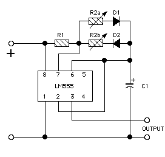
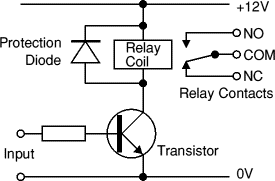

The fire-breathing dragon is an animetronic piece my neighbor built. I did the electronics. The mechanical piece is a long neck with a conduit for fog and electonics. The head has high-output orange LEDs in the eyes and several high-output red LEDs in the throat to illuminate the fog exiting the mounth (i.e., "fire-breathing").
The controller has 4 120V outlets available externally. One is powered all the time (for the fog machine). The other three are switched using a relay in the main controller box. These are for the blower fan and the two compressed air switches. A power strip inside the main controller box is also always powered -- for the 12V wall-wart power supply.
The circuit board in the main control box has a 555 timer with independently controlled timing:

Also on board is a voice chip and an amplifier, identical to those used in the Flying Ghosts.
The pinout from the IDC connector is as follows:
28 pin .3" DIP socket:
16 pin .3" DIP socket (per Flying Ghosts wiring diagrm):
Terminal strip:
Relays and transistors that switch relays are protected using a diode, as shown
below:

At one point, we hit some cycling problems. It turned out to be related to a long power run and the operation of the fog machine off the same run (or same circuit -- as yet undetermined). But in trying to fix the problem, I added 0.1uF caps on pin 5 of the 555, across pins 1 and 8 of the 555, across the 12V entry point onto the card, and across the relay power exit point. I also added a heat sink to the LM7812 I put on the wall wart (it had votage varying between 16 and 19 volts, and the 555 timing was fuzzy because of that, but that's unrelated to the last cycling problem).